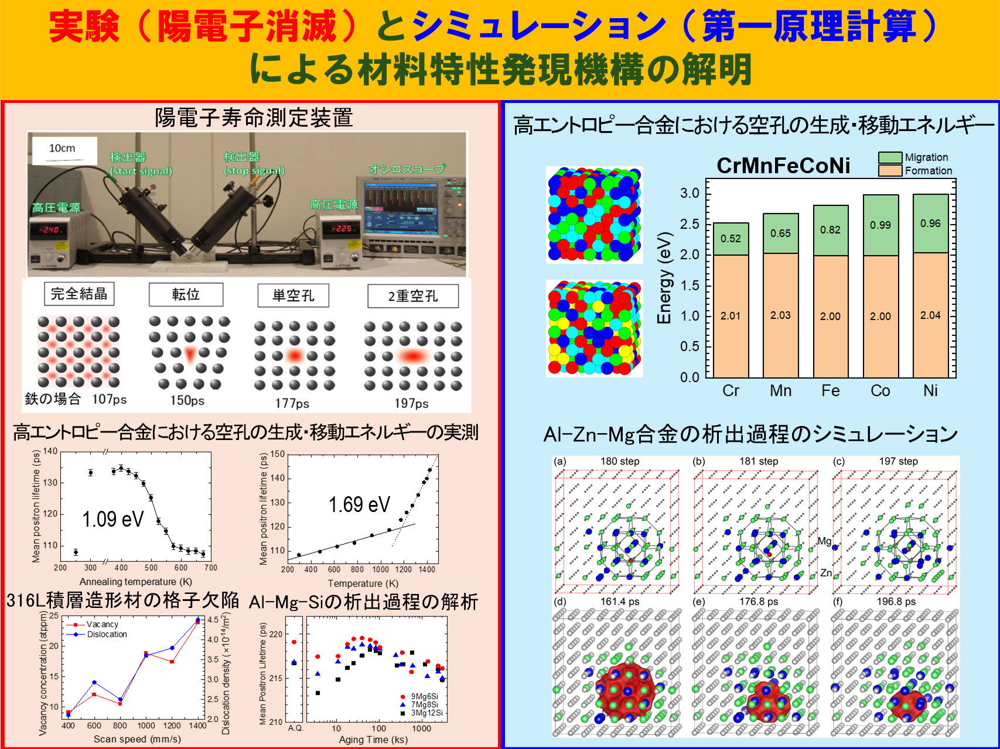

Research
研究内容・テーマ
当研究室では、陽電子消滅法を主軸とした先端的な材料解析技術により、金属・半導体材料の微細構造を原子レベルで解明しています。
研究概要
電子の反物質である陽電子（ポジトロン）を利用することにより、材料の内部構造を原子サイズオーダで観察することができます。量子機能材料設計分野では自動車用アルミニウム合金や高強度鋼などの金属材料や、近年注目されている多種類の元素を均一に混合した高エントロピー合金や金属３Ｄプリンターで作製した合金などにおいて優れた特性が発現する機構を、主として陽電子を用いた実験および第一原理計算を用いたコンピュータ・シミュレーションにより解明し、新しい材料を設計するための研究を行っています。

研究テーマ
当研究室における近年の主な研究テーマをご紹介します。
2025年度 修士論文テーマ
- cBNにおける点欠陥および複合欠陥が弾性特性に及ぼす影響の第一原理計算
- Al-Mg-Cu合金における空孔-溶質原子クラスタ形成過程のモンテカルロ計算による解析
- レーザ粉末床溶融結合法により造形されたβチタン合金における格子欠陥の同定
- Al-Mg-Si合金の溶質原子クラスタ形成に及ぼす予備時効温度の影響
- 銅固溶体合金における積層欠陥エネルギーの解析
2025年度 卒業論文テーマ
- レーザー粉末床溶融結合法により造形されたTi-V合金における格子欠陥の同定
- 冷間圧延を施したマルテンサイト鋼中の格子欠陥に及ぼす水素の影響
- cBNにおける複合欠陥の陽電子寿命の理論計算
- Al-Mg-Si合金の溶質クラスタ形成に及ぼすMg/Si組成比と時効温度の影響
- 陽電子寿命法によるAl-Zn-Mg合金の炉冷過程中における溶質クラスタ形成挙動の解析
- 第一原理計算によるCu-Ni-Si合金の弾性特性評価
- Al-Mg-Si合金の溶質原子クラスタに及ぼすCuの影響
- βTi-V合金の空孔形成エネルギーの第一原理計算